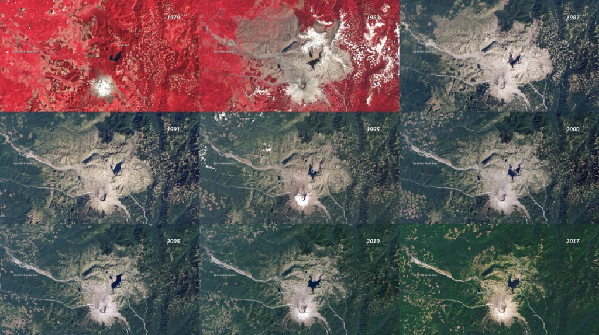
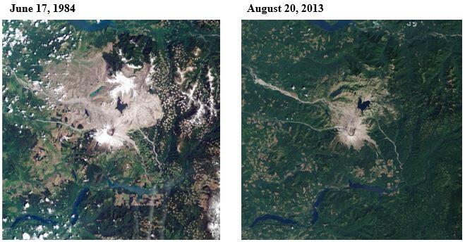
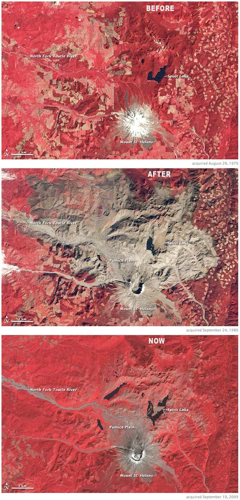

With the eruption of Mount St. Helens comes the destruction of the area around it.
Vegetation growth can be shown in these photos of the changes that has occured overtime,
research has also shown, that the density might be denser now that before the mountain erupted.
In fact there are now over 150 lakes and river streams, new trails and even more wildlife than before.
The natural disaster has created many ecosystems that have supported new lifeforms that wouldn't have been
possible without the occurence of the eruption.
1 / 3

Vegetation change from 1979 - 2017
2 / 3

Comparing peaks post eruption
3 / 3

Satellite imagery of vegetation growth
❮
❯